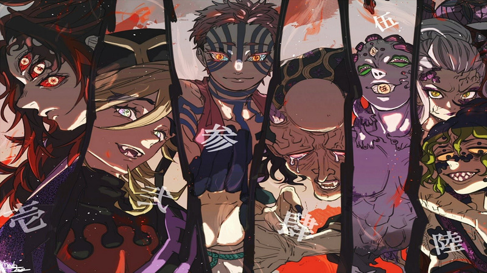
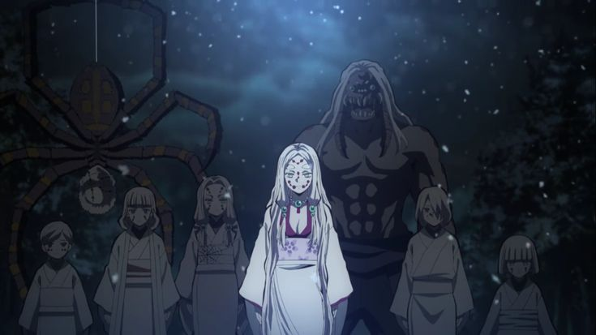

Onis (Demonios)
Os Onis são seres humanos que foram infectados com o sangue de um demônio chamado Muzan
kibutsuji, o
grande antagonista da série. Ele injeta o seu sangue nas pessoas que passam por uma
transformação,
adquirindo poderes como super velocidade, resistência e habilidades especiais. Os onis possuem
uma
classificação diferente de acordo com a sua força, podendo ser classificados como, Demonions
Comuns,
Luas Inferiores e Luas Superiores.

(Ilustração das 6 luas superiores)

Humanos transformado em demonio por uma Lua Inferior
Os Onis em sua marioria são classificados como Demonios Comuns, raros são os Onis classificados
como
Luas-Inferiores e mais raros ainda são os Onis classificados como Luas Superirores, mesmo
somando os
Luas Inferiores e Luas Superiores, seu numero não ultrapassa 10, o que mostra o quão dificil é
chegar
nesse nivel de poder.
Para que possa se atingir esse nivel, o Oni em especial precisa ter se alimentado de diversos
seres
humanos, fazendo com que ele receba uma recompensa do demonio primordial Muzan kibutsuji que
injeta um
pouco mais de seu proprio sangue no Oni, fazendo com que o mesmo adquira novas habilidades
especiais
denominadas #Kekkijutsu#, alem de melhorias em seus atributos fisicos